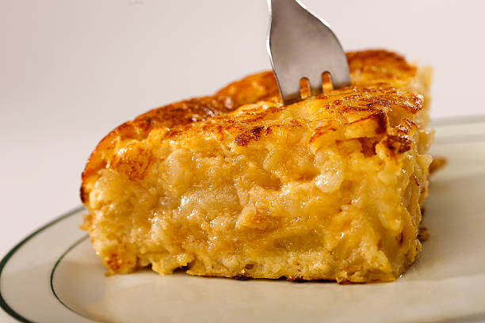

Spanish tortilla

Cook the greatest spanish recipe like your abuela!
Ingredients
- Four potatos
- One big onion
- Three eggs
- Salt and olive oil
Steps
- Cut the onion in thin pieces. Add plenty of oil to the pan and fry the onion over medium heat.
- Cut the potatoes in thin pieces and add to the pan when the onion reaches golden brown.
- Fry over medium heat until the potato is soft.
- Pour everything into another recipient, add the eggs and salt and stir.
- Add to the pan again and cook over low heat for 3-4 min. Turn the tortilla around and repeat.
Home